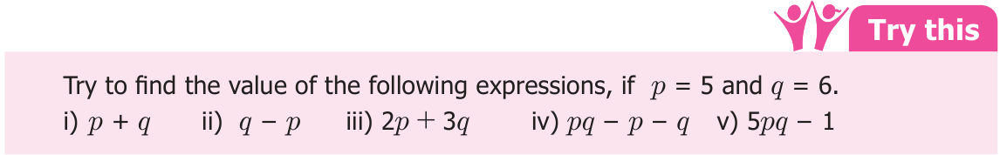

Sometimes we would like to assign definite values to the variables in an expression to find the value of that expression. This situation arises in many real life problems. For example, if the teacher of class 7 wants to select 10 students for a competition, for which she can choose any number of boys and girls.
If the number of boys are x and the number of girls are y, then the required algebraic expression to find the total number of participants is \(x + y\).
Here, the total number of students to be selected is 10 and if only two girls are interested to participate in the competition, then how many boys should be selected? Obviously, if \(y = 2\) then \(x + 2 = 10\). The value \(x = 8\) satisfies the equation. So, the number of boys to be selected is 8. Follow the steps to obtain the value. Step \(- 1\): Study the problem. Fix the variable and write the algebraic expression. Step \(- 2\): Replace each variable by the given numerical value to obtain an numerical expression.
Step \(- 3\): Simplify the numerical expression by BIDMAS method. Step \(- 4\): The value so obtained is the required value of the expression.

Example 3.3
If \(x = 3\), \(y = 2\) find the value of (i) \(4x + 7y\) (ii) \(3x + 2y - 5\) (iii) \(x - y\)
Solution
- i)\(4x + 7y = 4 (3) + 7 (2) = 12 + 14 = 26\)
- ii)\(3x + 2y - 5 = 3 (3) + 2 (2) - 5 = 9 + 4 - 5 = 8\)
- iii)\(x - y = 3 - 2 = 1\)
Example 3.4
Find the value of (i) \(3m + 2n\) (ii) \(2m - n\) (iii) mn \(- 1\), given that \(m = 2\), \(n = - 1\).
Solution
- i)\(3m + 2n = 3(2) + 2( - 1) = 6 - 2 = 4\)
- ii)\(2m - n = 2(2) -\) ( \(- 1) = 4 + 1 = 5\)
- iii)mn \(- 1 = (2)\) ( \(- 1) - 1 = - 2 - 1 = - 3\)
- 1.Fill in the blanks:
- (i)The variable in the expression \(16x - 7\) is ________.
- (ii)The constant term of the expression \(2y - 6\) is _________.
- (iii)In the expression \(25m + 14n\), the type of the terms are ________ terms.
- (iv)The number of terms in the expression \(3ab + 4c - 9\) is ________.
- (v)The numerical co-efficient of the term - xy is ________.